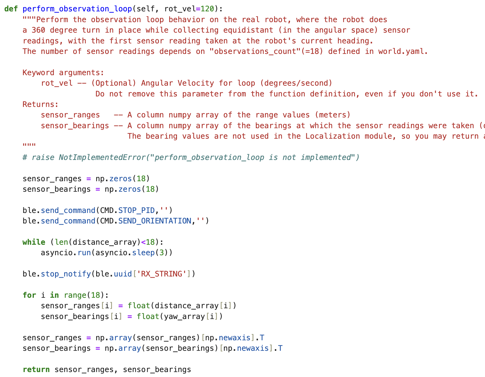
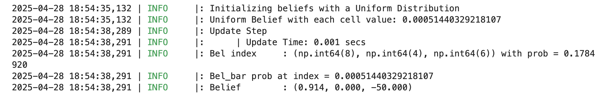
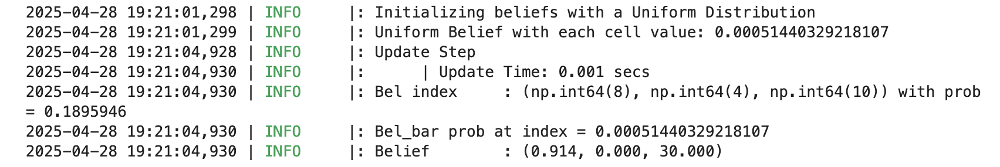
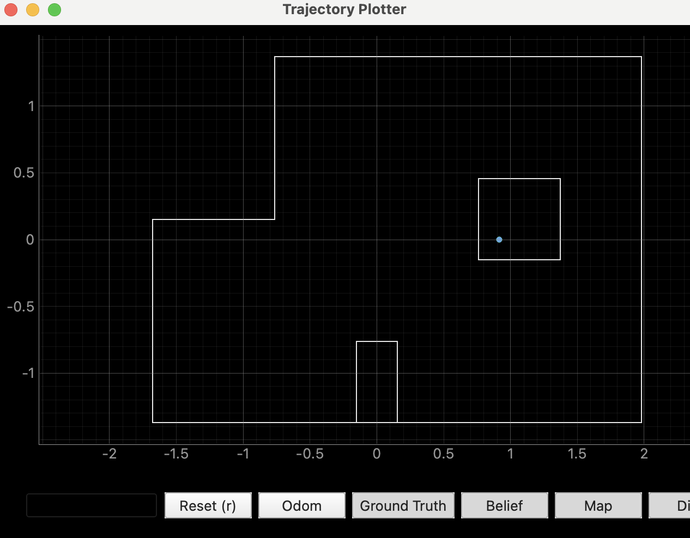
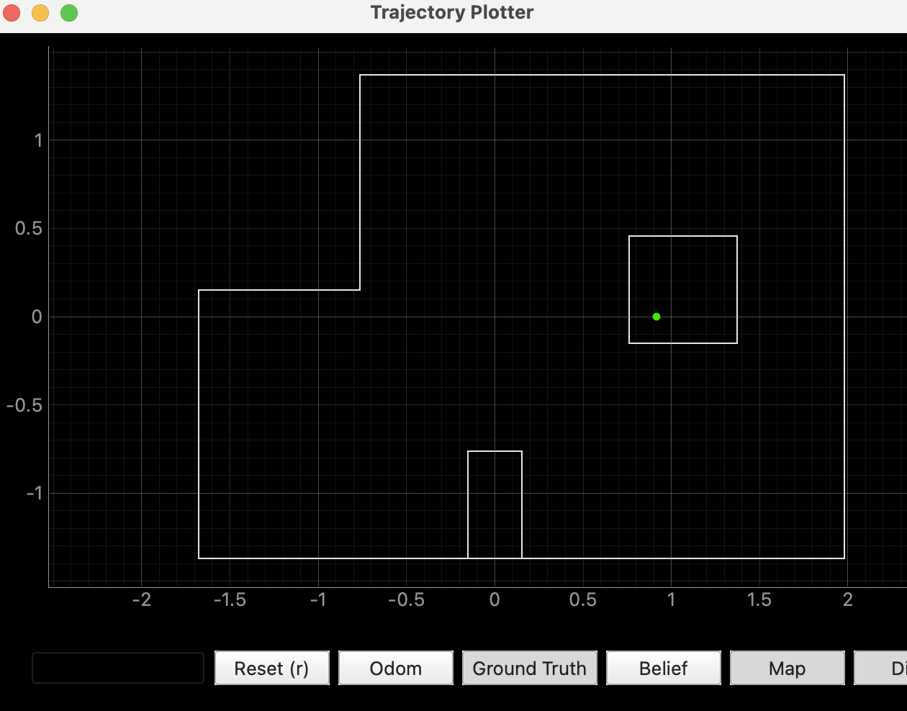

Lab 11: Localization(real)
TASKS:
LOCALIZATION IN SIM:
To start the lab, our first task was to run the Bayes Filter simulation provided in the lab11_sim.ipynb file. After running the simulation and moving the virtual robot around the given space, I obtained the plot shown below. In the plot: red represents odometry, green represents ground truth, and blue represents belief.

ARDUINO IDE CODE:
In order to continue with the rest of the tasks for Lab 11, I needed my Lab 9 code. Since I had not completed Lab 9, I started by working on that. I wrote code that would make the robot perform a 360-degree turn in place, recording distance sensor measurements every 20 degrees.
Here is my Lab 9 code. First is the ORIENTATION_CONTROL command and then there is the BLE connected while loop:
And here is a video of my robot doing the 360 turn:
POLAR PLOTS:
After reverting my yaw values to be in radians and tweaking my time of flight sensor code because I was getting junky data. I went ahead and ran my orientation control twice for each of the 4 coordinates in the lab set up. At times the left wheels would stop working and they would get jammed which caused the robot to move from the original coordinate - this effect can be seen mostly in the data for Run 1.
 |
 |
 |
 |
GLOBAL FRAME PLOTS:
I then converted the polar measurements, relative to the car, to the inertial reference frame of the lab room. I used the transformation matrix:
\[ \begin{bmatrix} x \\ y \end{bmatrix} = r \begin{bmatrix} \cos(\theta) \\ \sin(\theta) \end{bmatrix} \]
I plotted all the four coordinates' first run in the same plot. I also added the lab set up's walls to the plot to observe how precise tho ToF sensor actually is. The effect of the robot moving out of its original spot can be seen mostly on the readings from the top right coordinate (5,3).


PERFORM_OBSERVATION_LOOP:
The perform_observation_loop function is designed to collect 18 observations during a full 360-degree rotation and store them in the sensor_ranges and sensor_bearings arrays. These arrays will later be used in the update step to populate the obs_range_data member variable. In my function, I first initialize the arrays that will later hold the distance and angle measurements. Then, I call my command cases to stop orientation control and send the collected data to the computer. I continue calling the asyncio function until 18 readings are collected (corresponding to a full rotation), and then I stop the notification handler. In the final steps of the function, I iterate over the collected readings and convert the lists into NumPy column arrays.
This function is then called in the "Run an update step of the Bayes Filter" section of the lab11_real.ipynb notebook. However, before running that cell I call a few commands and initialize my arrays that will collect my data.

RUN ROBOT LOCALIZATION:
LAST TIME: For the next task, I had to run my code twice for each of the poses marked on the lab setup. These poses are: (-3ft, -2ft, 0 deg), (0ft, 3ft, 0 deg), (5ft, -3ft, 0 deg), and (5ft, 3ft, 0 deg). I ran the code 3-4 times for each pose and I got the same two coordinates for all of them. I tried changing initial orientation at each pose and did 0, 90, 180 and -90 degrees for each pose and at the bottom left pose I even did like an angle between -90 and 180 to see if its any better and still no improvement. The sensor_readings and sensor_ranges arrays both have pretty accurate values for distances and yaw measurements however the coordinates for the belief and the ground truth were always one of these two:
 
LAST TIME: First two pictures are runs at different orientations of the same pose (5ft, 3ft) and the second one is the second run of the bottom right pose, (5ft, - 3ft,) since the first run gave me the exact same values while in a different initial orientation. My results for the left points, both upper and lower, alternated between those two coordinates no matter the orientation I tried. At once I tried going clockwise instead of counter-clockwise but that made my robot spin nonstop so I returned it to counter-clockwise.
LAST TIME: Here are the belief (blue) and ground truth(green) plots of the 1st run on the top right pose,(5ft, 3ft).
|  |  |
RECENT UPDATE: I was able to improve my data. My ToF sensor measurements were not accurate so I altered my code a bit at the part where I save the distance measurements and I was able to get better measurements. With these I got the following plots for the belief:
 |
 |
 |
 |
REFERENCES:
For this lab I referenced, Stephan Wagner's and Mikayla Lahr's labs from previous years. I also used ChatGPT to help with the grammar.